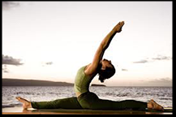

It is the physical, mental and spitritual practices or disciplines which originated in ancient India with a view to attain a state of permanent peace. The term yoga can be derived from either of two roots, yujir yoga (to yoke) or yuj samādhau (to concentrate).
One of the most detailed and thorough expositions on the subject is the Yoga Sūtras of Patañjali, which defines yoga as "the stilling of the changing states of the mind. Yoga has also been popularly defined as "union with the divine" in other contexts and traditions.Whether yo are a complete newbie or looking for something beyond your sun salutations, we have got the yoga poses and workouts for you.
DO's

DONT’s
DIET
Everything that we eat is food for our soul. Yogis believe that food is the creator of prana (life force) that sustains our bodies and brings us vitality and health. Therefore, the types of foods we choose to eat reflect the level of our conscious development. The discipline of yoga suggests a pure (ethical) vegetarian diet, which facilitates the development of sattva. Sattva is a quality of love, awareness, connection, and peace with all sentient beings. Yogis believe that food is our first interaction with the world around us, and if we do not eat with a sense of love, connection, and peace, all other facets of our lives are inclined to suffer.

Foods to Avoid or Reduce When Following a Yogic Diet :